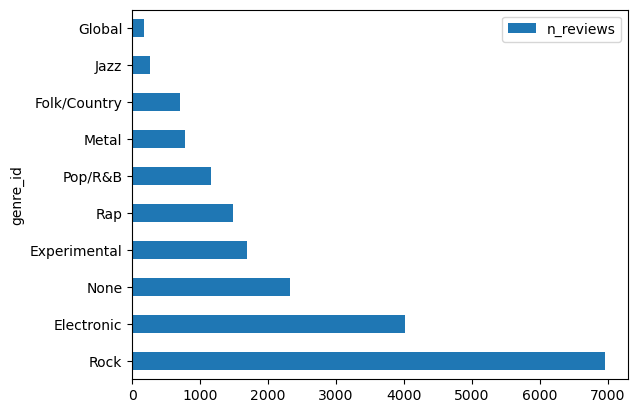

import sqlite3
import pandas as pd
import numpy as npNB: Pandas and SQL
Overview
In this exercise, we split the raw table into tables corresponding the implied subjects we discovered.
Then we use joins to reassemble the data.
We will assumed that the implied subjects are ARTIST, GENRE, ALBUM, and REVIEW.
To do this, we use Pandas to store the initial table as a dataframe, and then we create variations of that dataframe and save those to the database as new tables.
Connect to the database
We create an empty database to store our work.
db = sqlite3.connect('./data/pitchfork.db')Get the raw review table
Get the review data.
raw = pd.read_csv("./data/pitchfork.csv").set_index('id')raw| album | artist | best | date | genre | review | score | |
|---|---|---|---|---|---|---|---|
| id | |||||||
| 1 | A.M./Being There | Wilco | 1 | December 6 2017 | Rock | Best new reissue 1 / 2 Albums Newly reissued a... | 7.0 |
| 2 | No Shame | Hopsin | 0 | December 6 2017 | Rap | On his corrosive fifth album, the rapper takes... | 3.5 |
| 3 | Material Control | Glassjaw | 0 | December 6 2017 | Rock | On their first album in 15 years, the Long Isl... | 6.6 |
| 4 | Weighing of the Heart | Nabihah Iqbal | 0 | December 6 2017 | Pop/R&B | On her debut LP, British producer Nabihah Iqba... | 7.7 |
| 5 | The Visitor | Neil Young / Promise of the Real | 0 | December 5 2017 | Rock | While still pointedly political, Neil Youngís ... | 6.7 |
| ... | ... | ... | ... | ... | ... | ... | ... |
| 19551 | 1999 | Cassius | 0 | January 26 1999 | Electronic | Well, it's been two weeks now, and I guess it'... | 4.8 |
| 19552 | Let Us Replay! | Coldcut | 0 | January 26 1999 | Electronic | The marketing guys of yer average modern megac... | 8.9 |
| 19553 | Singles Breaking Up, Vol. 1 | Don Caballero | 0 | January 12 1999 | Experimental | Well, kids, I just went back and re-read my re... | 7.2 |
| 19554 | Out of Tune | Mojave 3 | 0 | January 12 1999 | Rock | Out of Tune is a Steve Martin album. Yes, I'll... | 6.3 |
| 19555 | Left for Dead in Malaysia | Neil Hamburger | 0 | January 5 1999 | None | Neil Hamburger's third comedy release is a des... | 6.5 |
19555 rows × 7 columns
Remove rows with missing data
Here’s a quick to inventory which columns have missing data.
raw.isna().sum()album 5
artist 0
best 0
date 0
genre 0
review 1
score 0
dtype: int64raw[raw.album.isna()]| album | artist | best | date | genre | review | score | |
|---|---|---|---|---|---|---|---|
| id | |||||||
| 58 | NaN | Gord Downie | 0 | November 17 2017 | Rock | Recorded in his final months and released 10 d... | 7.4 |
| 261 | NaN | Yves Tumor | 0 | September 23 2017 | Experimental | This self-released compilation from Yves Tumor... | 7.8 |
| 273 | NaN | Lee Ranaldo | 0 | September 20 2017 | Experimental | Lee Ranaldoís latest album is his finest post-... | 6.5 |
| 351 | NaN | Queens of the Stone Age | 0 | August 28 2017 | Rock | With production flourishes from Mark Ronson, J... | 6.9 |
| 6795 | NaN | Inverloch | 0 | April 9 2012 | None | The Melbourne metal band forges a strong bridg... | 6.7 |
raw[raw.review.isna()]| album | artist | best | date | genre | review | score | |
|---|---|---|---|---|---|---|---|
| id | |||||||
| 13301 | Shine On | Jet | 0 | October 2 2006 | Rock | NaN | 0.0 |
raw = raw.dropna()Drop dupicate rows, too.
raw = raw.drop_duplicates()raw = raw.reset_index().set_index('id')raw.to_sql('raw', db, if_exists='replace')19544raw| album | artist | best | date | genre | review | score | |
|---|---|---|---|---|---|---|---|
| id | |||||||
| 1 | A.M./Being There | Wilco | 1 | December 6 2017 | Rock | Best new reissue 1 / 2 Albums Newly reissued a... | 7.0 |
| 2 | No Shame | Hopsin | 0 | December 6 2017 | Rap | On his corrosive fifth album, the rapper takes... | 3.5 |
| 3 | Material Control | Glassjaw | 0 | December 6 2017 | Rock | On their first album in 15 years, the Long Isl... | 6.6 |
| 4 | Weighing of the Heart | Nabihah Iqbal | 0 | December 6 2017 | Pop/R&B | On her debut LP, British producer Nabihah Iqba... | 7.7 |
| 5 | The Visitor | Neil Young / Promise of the Real | 0 | December 5 2017 | Rock | While still pointedly political, Neil Youngís ... | 6.7 |
| ... | ... | ... | ... | ... | ... | ... | ... |
| 19551 | 1999 | Cassius | 0 | January 26 1999 | Electronic | Well, it's been two weeks now, and I guess it'... | 4.8 |
| 19552 | Let Us Replay! | Coldcut | 0 | January 26 1999 | Electronic | The marketing guys of yer average modern megac... | 8.9 |
| 19553 | Singles Breaking Up, Vol. 1 | Don Caballero | 0 | January 12 1999 | Experimental | Well, kids, I just went back and re-read my re... | 7.2 |
| 19554 | Out of Tune | Mojave 3 | 0 | January 12 1999 | Rock | Out of Tune is a Steve Martin album. Yes, I'll... | 6.3 |
| 19555 | Left for Dead in Malaysia | Neil Hamburger | 0 | January 5 1999 | None | Neil Hamburger's third comedy release is a des... | 6.5 |
19544 rows × 7 columns
Create implied subject tables
The artist table
We get the unique artist names and save them to a new dataframe, and change the column name and the index name in the process so that we have well-named columns in our table.
artists = raw.artist.value_counts().to_frame('n_reviews')
artists.index.name = 'artist_id'
artists.to_sql('artist', db, index=True, if_exists='replace', index_label='artist_id')9249artists.sample(10)| n_reviews | |
|---|---|
| artist_id | |
| Flying Canyon | 1 |
| Florence and the Machine | 4 |
| Larkin Grimm | 3 |
| Dylan LeBlanc | 2 |
| Devo | 2 |
| Tory Lanez | 3 |
| Sacred Paws | 1 |
| Little Wings | 4 |
| Boris / Ian Astbury | 1 |
| The Sight Below | 2 |
How many albums does Wilco have?
artists.loc['Wilco'].n_reviews14Pattern
- Import the columns that you want from raw table into a new dataframe.
value_counts()is your friend. - Rename columns and index as desired.
- Put the new dataframe into the database as a new table. No need to define the schema!
The genre table
genres = raw.genre.value_counts().to_frame('n_reviews')
genres.index.name = 'genre_id'
genres.to_sql('genre', db, index=True, if_exists='replace', index_label='genre_id')10genres| n_reviews | |
|---|---|
| genre_id | |
| Rock | 6954 |
| Electronic | 4020 |
| None | 2320 |
| Experimental | 1696 |
| Rap | 1481 |
| Pop/R&B | 1157 |
| Metal | 781 |
| Folk/Country | 700 |
| Jazz | 257 |
| Global | 178 |
genres.plot.barh();
The album table
albums = raw[['album','artist','genre']].value_counts().to_frame('n_reviews').reset_index().set_index(['artist','album'])
albums.index.names = ['artist_id','album_id']
albums = albums.rename(columns={'genre':'genre_id'})
albums.to_sql('album', db, index=True, if_exists='replace', index_label=albums.index.names)19506albums| genre_id | n_reviews | ||
|---|---|---|---|
| artist_id | album_id | ||
| NÙze | Songs on the Rocks | None | 2 |
| The Postal Service | Give Up | Electronic | 2 |
| Enon | Believo! | Rock | 2 |
| Tim Hecker | Radio Amor | Experimental | 2 |
| Of Montreal | If He Is Protecting Our Nation, Then Who Will Protect Big Oil, Our Children? | Rock | 2 |
| ... | ... | ... | ... |
| Russian Circles | Guidance | Metal | 1 |
| Various Artists | Guess Who This Is: A Tribute to Dom Leone | None | 1 |
| Beck | Guerolito | Rock | 1 |
| Guero | Rock | 1 | |
| Pretty Girls Make Graves | …lan Vital | None | 1 |
19506 rows × 2 columns
The review table
reviews = raw[['album', 'artist', 'best', 'date', 'review', 'score']].copy()
reviews.columns = ['album_id', 'artist_id', 'is_best', 'review_date', 'review_content', 'album_score']
reviews = reviews.set_index(['artist_id','album_id','review_date'])
reviews.to_sql('review', db, index=True, if_exists='replace', index_label=reviews.index.names)19544reviews.head()| is_best | review_content | album_score | |||
|---|---|---|---|---|---|
| artist_id | album_id | review_date | |||
| Wilco | A.M./Being There | December 6 2017 | 1 | Best new reissue 1 / 2 Albums Newly reissued a... | 7.0 |
| Hopsin | No Shame | December 6 2017 | 0 | On his corrosive fifth album, the rapper takes... | 3.5 |
| Glassjaw | Material Control | December 6 2017 | 0 | On their first album in 15 years, the Long Isl... | 6.6 |
| Nabihah Iqbal | Weighing of the Heart | December 6 2017 | 0 | On her debut LP, British producer Nabihah Iqba... | 7.7 |
| Neil Young / Promise of the Real | The Visitor | December 5 2017 | 0 | While still pointedly political, Neil Youngís ... | 6.7 |
reviews.loc['Wilco'].sort_index()| is_best | review_content | album_score | ||
|---|---|---|---|---|
| album_id | review_date | |||
| A Ghost Is Born | June 21 2004 | 0 | At the time of Yankee Hotel Foxtrot's non-trad... | 6.6 |
| A.M./Being There | December 6 2017 | 1 | Best new reissue 1 / 2 Albums Newly reissued a... | 7.0 |
| Alpha Mike Foxtrot: Rare Tracks 1994ñ2014/What's Your 20? Essential Tracks 1994ñ2014 | November 19 2014 | 0 | 1 / 2 Albums Both the†Alpha Mike Foxtrot†rarit... | 7.0 |
| Kicking Television: Live in Chicago | November 13 2005 | 0 | This 2xCD live album finds the now six-piece b... | 8.3 |
| More Like the Moon EP | April 27 2003 | 0 | Okay, show of hands: how many of you people ha... | 7.0 |
| Schmilco | September 9 2016 | 0 | Wilco's 10th album is a largely acoustic affai... | 7.0 |
| Sky Blue Sky | May 14 2007 | 0 | Despite the experimental pedigree of their new... | 5.2 |
| Star Wars | July 23 2015 | 0 | With its $0 asking price, lawsuit-baiting titl... | 7.7 |
| Summerteeth | February 28 1999 | 0 | After parting ways with Uncle Tupelo partner J... | 9.4 |
| The Whole Love | September 26 2011 | 0 | Wilco's adventurous, self-produced eighth LP f... | 6.9 |
| The Wilco Book | October 31 2004 | 0 | We don't usually review books, but seeing that... | 7.5 |
| Wilco (The Album) | June 29 2009 | 0 | Jeff Tweedy and co.'s latest does what its tit... | 7.3 |
| Yankee Hotel Foxtrot | April 21 2002 | 0 | Myth, it has been said, is the buried part of ... | 10.0 |
| iTunes Session | February 2 2012 | 0 | This eight-song EP, comprised primarily of tra... | 6.7 |
reviews.loc['Wilco'].album_score.mean().round(2)7.4Note how the new review table has fewer columns – e.g. we no longer have genre.
Results
So, we have create four primary tables from our raw data.
artists.head()| n_reviews | |
|---|---|
| artist_id | |
| Various Artists | 717 |
| Guided by Voices | 25 |
| David Bowie | 22 |
| Mogwai | 21 |
| The Beatles | 21 |
albums.head()| genre_id | n_reviews | ||
|---|---|---|---|
| artist_id | album_id | ||
| NÙze | Songs on the Rocks | None | 2 |
| The Postal Service | Give Up | Electronic | 2 |
| Enon | Believo! | Rock | 2 |
| Tim Hecker | Radio Amor | Experimental | 2 |
| Of Montreal | If He Is Protecting Our Nation, Then Who Will Protect Big Oil, Our Children? | Rock | 2 |
genres.head()| n_reviews | |
|---|---|
| genre_id | |
| Rock | 6954 |
| Electronic | 4020 |
| None | 2320 |
| Experimental | 1696 |
| Rap | 1481 |
reviews.head()| is_best | review_content | album_score | |||
|---|---|---|---|---|---|
| artist_id | album_id | review_date | |||
| Wilco | A.M./Being There | December 6 2017 | 1 | Best new reissue 1 / 2 Albums Newly reissued a... | 7.0 |
| Hopsin | No Shame | December 6 2017 | 0 | On his corrosive fifth album, the rapper takes... | 3.5 |
| Glassjaw | Material Control | December 6 2017 | 0 | On their first album in 15 years, the Long Isl... | 6.6 |
| Nabihah Iqbal | Weighing of the Heart | December 6 2017 | 0 | On her debut LP, British producer Nabihah Iqba... | 7.7 |
| Neil Young / Promise of the Real | The Visitor | December 5 2017 | 0 | While still pointedly political, Neil Youngís ... | 6.7 |
Use .join()
If we want to see genre in the review, we can create a join.
reviews.join(albums)| is_best | review_content | album_score | genre_id | n_reviews | |||
|---|---|---|---|---|---|---|---|
| artist_id | album_id | review_date | |||||
| !!! | As If | October 21 2015 | 0 | Despite popular perception, !!! never quite fi... | 6.9 | Rock | 1 |
| Jamie, My Intentions Are Bass EP | November 1 2010 | 0 | The dance-rock fixtures enlist Bibio, Tim Gold... | 6.8 | Rock | 1 | |
| Louden Up Now | June 7 2004 | 0 | For club-friendly artists to become or remain ... | 7.0 | Rock | 1 | |
| Myth Takes | March 2 2007 | 0 | Nic Offer, now focused solely on this band aft... | 8.0 | Rock | 1 | |
| Shake the Shudder | May 24 2017 | 0 | The new !!! album finds them working with a sl... | 7.3 | Rock | 1 | |
| ... | ... | ... | ... | ... | ... | ... | ... |
| ”lafur Arnalds | Found Songs | February 16 2010 | 0 | The young Icelandic composer who has opened fo... | 6.3 | Rock | 1 |
| Living Room Songs / Another Happy Day OST | February 16 2012 | 0 | 1 / 2 Albums The Icelandic composer, known for... | 4.5 | Rock | 1 | |
| Now I Am Winter | April 9 2013 | 0 | The Icelandic composer who has toured with†Sig... | 5.5 | Rock | 1 | |
| ”lˆf Arnalds | Innundir Skinni | October 26 2010 | 0 | Icelandic singer/songwriter continues to slowl... | 8.0 | Pop/R&B | 1 |
| ∆vangelist | Omen Ex Simulacra | December 11 2013 | 0 | On their second album Omen Ex Simulacra, the O... | 7.0 | None | 1 |
19544 rows × 5 columns
albums.join(artists, rsuffix='_artist')| genre_id | n_reviews | n_reviews_artist | ||
|---|---|---|---|---|
| artist_id | album_id | |||
| NÙze | Songs on the Rocks | None | 2 | 2 |
| The Postal Service | Give Up | Electronic | 2 | 3 |
| Enon | Believo! | Rock | 2 | 6 |
| Tim Hecker | Radio Amor | Experimental | 2 | 12 |
| Of Montreal | If He Is Protecting Our Nation, Then Who Will Protect Big Oil, Our Children? | Rock | 2 | 20 |
| ... | ... | ... | ... | ... |
| Russian Circles | Guidance | Metal | 1 | 6 |
| Various Artists | Guess Who This Is: A Tribute to Dom Leone | None | 1 | 717 |
| Beck | Guerolito | Rock | 1 | 11 |
| Guero | Rock | 1 | 11 | |
| Pretty Girls Make Graves | …lan Vital | None | 1 | 3 |
19506 rows × 3 columns